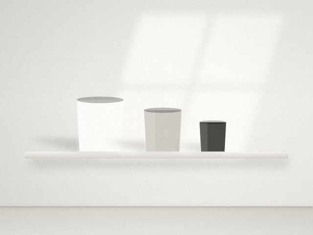

家族と暮らすミニマリズムは、自分の持ち物から始める
一人なら自分の判断で進められる片付けも、家族がいると話は別。家族の物には手をつけず、自分の物と共有スペースから始めるのが、うまくいくコツです。

家族の物を勝手に捨てない
ミニマリズムに目覚めると、家族の物の多さが気になり始めるものです。でも、家族の物を勝手に処分するのは避けましょう。本人にとって大切なものかもしれませんし、信頼関係を損ねると、その後の片付けにも協力してもらえなくなります。
まずは自分の物から減らすことに集中してください。自分のスペースがすっきりして暮らしやすそうに見えると、家族も自然と興味を持つようになります。
共有スペースは「ルール」で整える
リビングやキッチン、玄関など家族みんなが使う場所は、物を減らすより先に、置き方のルールを決めると整いやすくなります。
- 物の住所を決め、ラベルを貼って誰でもわかるようにする
- 床やテーブルの上には物を置かない、と決める
- 一日の終わりに、5分だけみんなで元に戻す時間をつくる
ルールはできるだけ少なく、子どもでも守れるものにするのがポイントです。
子どもの物との付き合い方
子どもの物は成長とともにどんどん増え、入れ替わります。おもちゃや服、学校の作品など、すべてを残すのは現実的ではありません。
おもちゃは、収納ボックスに入る分だけと決め、あふれたら子ども自身に「どれを残すか」を選んでもらいます。自分で選ぶ経験は、物を大切にする気持ちを育てることにもつながります。
作品や思い出の品は、写真に撮って残し、本物は特に気に入ったものだけを一年に一箱分と決めるなど、量の上限をつくると管理しやすくなります。
家事を減らす視点で見直す
家族がいるミニマリズムの大きなメリットは、家事が減ることです。
食器の数を家族の人数分に絞れば、洗い物がたまる前に片付けるようになります。タオルの種類を統一すれば、たたむのも収納も簡単です。物を減らすことを「家族みんなの家事を楽にする工夫」として伝えると、協力も得やすくなります。